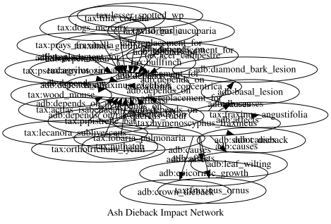

Ash Dieback in the UK
Simon Frost
Introduction
Ash dieback, caused by the fungus Hymenoscyphus fraxineus, is the most serious tree disease to affect the UK in a generation. First confirmed in the UK in 2012, it is expected to kill up to 80% of the country’s 80 million ash trees (Fraxinus excelsior), with cascading consequences for the ~955 species that depend on ash.
This vignette builds a knowledge graph for ash dieback that integrates pathology, ecology, and surveillance data, then analyses it using the full breadth of RDFLib.jl: ontology design, tabular data import, SHACL validation, SPARQL queries, property paths, Datalog reasoning, ProbLog probabilistic inference, and visualization.
using RDFLib1. Disease Ontology
We define an ontology covering tree species, pathogens, associated organisms, symptoms, woodland sites, and surveillance observations.
g = RDFGraph()
# Namespaces
adb = Namespace("http://example.org/ashdieback#")
tax = Namespace("http://example.org/taxon/")
site = Namespace("http://example.org/site/")
bind!(g, "adb", adb)
bind!(g, "tax", tax)
bind!(g, "site", site)
# Classes
for cls in ["TreeSpecies", "Pathogen", "AssociatedSpecies",
"Symptom", "WoodlandSite", "SurveyObservation",
"DiseaseStage", "ConservationStatus"]
add!(g, Triple(adb(cls), RDF.type, OWL.Class))
end
# Object properties
for (prop, dom, rng) in [
("causes", "Pathogen", "Symptom"),
("affects", "Pathogen", "TreeSpecies"),
("depends_on", "AssociatedSpecies", "TreeSpecies"),
("has_symptom", "SurveyObservation", "Symptom"),
("observed_at", "SurveyObservation", "WoodlandSite"),
("has_disease_stage", "SurveyObservation", "DiseaseStage"),
("secondary_pathogen", "Pathogen", "TreeSpecies"),
("replacement_for", "TreeSpecies", "TreeSpecies"),
("competes_with", "Pathogen", "Pathogen"),
("has_status", "AssociatedSpecies", "ConservationStatus"),
]
p = adb(prop)
add!(g, Triple(p, RDF.type, OWL.ObjectProperty))
add!(g, Triple(p, RDFS.domain, adb(dom)))
add!(g, Triple(p, RDFS.range, adb(rng)))
end
# Datatype properties
for prop in ["common_name", "latin_name", "host_specificity",
"infection_pct", "tree_count", "crown_loss_pct",
"survey_date", "surveyor", "grid_ref", "region",
"spore_load", "latitude", "longitude"]
add!(g, Triple(adb(prop), RDF.type, OWL.DatatypeProperty))
end
println("Ontology: $(length(g)) triples")Ontology: 51 triples2. The Pathogen and Its Hosts
# The pathogen
hf = tax("hymenoscyphus_fraxineus")
add!(g, Triple(hf, RDF.type, adb("Pathogen")))
add!(g, Triple(hf, adb("common_name"), Literal("Ash dieback fungus")))
add!(g, Triple(hf, adb("latin_name"), Literal("Hymenoscyphus fraxineus")))
# Secondary pathogen that accelerates decline
armillaria = tax("armillaria_mellea")
add!(g, Triple(armillaria, RDF.type, adb("Pathogen")))
add!(g, Triple(armillaria, adb("common_name"), Literal("Honey fungus")))
add!(g, Triple(armillaria, adb("latin_name"), Literal("Armillaria mellea")))
add!(g, Triple(armillaria, adb("secondary_pathogen"), tax("fraxinus_excelsior")))
# Host tree species
trees = [
("fraxinus_excelsior", "Common Ash", "Fraxinus excelsior", "primary"),
("fraxinus_angustifolia","Narrow-leaved Ash","Fraxinus angustifolia","primary"),
("fraxinus_ornus", "Manna Ash", "Fraxinus ornus", "resistant"),
]
for (id, common, latin, susceptibility) in trees
t = tax(id)
add!(g, Triple(t, RDF.type, adb("TreeSpecies")))
add!(g, Triple(t, adb("common_name"), Literal(common)))
add!(g, Triple(t, adb("latin_name"), Literal(latin)))
add!(g, Triple(t, adb("host_specificity"), Literal(susceptibility)))
add!(g, Triple(hf, adb("affects"), t))
end
# Potential replacement species for ash
replacements = [
("quercus_robur", "Pedunculate Oak", "Quercus robur"),
("acer_campestre", "Field Maple", "Acer campestre"),
("tilia_cordata", "Small-leaved Lime","Tilia cordata"),
("sorbus_aucuparia", "Rowan", "Sorbus aucuparia"),
("alnus_glutinosa", "Common Alder", "Alnus glutinosa"),
]
for (id, common, latin) in replacements
t = tax(id)
add!(g, Triple(t, RDF.type, adb("TreeSpecies")))
add!(g, Triple(t, adb("common_name"), Literal(common)))
add!(g, Triple(t, adb("latin_name"), Literal(latin)))
add!(g, Triple(t, adb("replacement_for"), tax("fraxinus_excelsior")))
end
# Disease stages
for (stage, desc) in [
("healthy", "No visible symptoms"),
("early", "Leaf wilting, small lesions on shoots"),
("moderate", "Crown dieback 20-50%, diamond-shaped bark lesions"),
("severe", "Crown dieback >50%, extensive bark damage"),
("dead", "Complete crown loss, tree dead or structurally unsafe"),
]
s = adb(stage)
add!(g, Triple(s, RDF.type, adb("DiseaseStage")))
add!(g, Triple(s, RDFS.label, Literal(stage)))
add!(g, Triple(s, RDFS.comment, Literal(desc)))
end
# Symptoms caused by the pathogen
symptoms = [
"leaf_wilting", "shoot_dieback", "crown_dieback",
"diamond_bark_lesion", "epicormic_growth", "basal_lesion",
]
for sym in symptoms
s = adb(sym)
add!(g, Triple(s, RDF.type, adb("Symptom")))
add!(g, Triple(s, RDFS.label, Literal(replace(sym, '_' => ' '))))
add!(g, Triple(hf, adb("causes"), s))
end
println("Disease model: $(length(g)) triples")Disease model: 126 triples3. Species Dependent on Ash
Of ~955 species associated with ash in the UK, 45 are obligate specialists and 62 are highly associated. We model representative species across taxonomic groups.
# Conservation status categories
for status in ["critical", "endangered", "vulnerable", "least_concern"]
add!(g, Triple(adb(status), RDF.type, adb("ConservationStatus")))
add!(g, Triple(adb(status), RDFS.label, Literal(replace(status, '_' => ' '))))
end
# Associated species: (id, common_name, group, specificity, status)
associated = [
("actias_isabellae", "Centre-barred Sallow", "moth", "obligate", "vulnerable"),
("prays_fraxinella", "Ash Bud Moth", "moth", "obligate", "least_concern"),
("agrilus_sinuatus", "Jewel Beetle", "beetle", "obligate", "endangered"),
("pseudargyrotoza", "Triangle-marked Tortrix", "moth", "obligate", "vulnerable"),
("lobaria_pulmonaria", "Tree Lungwort", "lichen", "high", "vulnerable"),
("lecanora_sublivescens","Ash Lichen", "lichen", "obligate", "critical"),
("orthotrichum_lyellii","Lyell's Bristle-moss", "bryophyte", "high", "vulnerable"),
("lesser_spotted_wp", "Lesser Spotted Woodpecker","bird", "associated", "endangered"),
("bullfinch", "Bullfinch", "bird", "associated", "least_concern"),
("nuthatch", "Nuthatch", "bird", "associated", "least_concern"),
("wood_mouse", "Wood Mouse", "mammal", "associated", "least_concern"),
("pipistrelle_bat", "Common Pipistrelle", "mammal", "associated", "least_concern"),
("wild_garlic", "Wild Garlic", "plant", "associated", "least_concern"),
("dogs_mercury", "Dog's Mercury", "plant", "high", "least_concern"),
("daldinia_concentrica","King Alfred's Cakes", "fungus", "obligate", "least_concern"),
]
for (id, name, group, specificity, status) in associated
s = tax(id)
add!(g, Triple(s, RDF.type, adb("AssociatedSpecies")))
add!(g, Triple(s, adb("common_name"), Literal(name)))
add!(g, Triple(s, adb("host_specificity"), Literal(specificity)))
add!(g, Triple(s, RDFS.comment, Literal(group)))
add!(g, Triple(s, adb("depends_on"), tax("fraxinus_excelsior")))
add!(g, Triple(s, adb("has_status"), adb(status)))
end
println("Associated species added: $(length(associated))")
println("Total graph: $(length(g)) triples")Associated species added: 15
Total graph: 224 triples4. Woodland Survey Sites
sites = [
("thetford", "Thetford Forest", "East Anglia", 52.45, 0.82, "TL8384"),
("ashdown", "Ashdown Forest", "South East", 51.07, 0.03, "TQ4432"),
("wyre", "Wyre Forest", "West Midlands", 52.37, -2.35, "SO7476"),
("glenmore", "Glenmore Forest", "Scottish Highlands",57.16, -3.67, "NH9809"),
("coed_y_brenin","Coed y Brenin", "North Wales", 52.82, -3.87, "SH7227"),
("killarney", "Killarney Oakwoods", "South West Ireland",51.98, -9.55, "V9685"),
("epping", "Epping Forest", "Greater London", 51.66, 0.05, "TQ4198"),
("delamere", "Delamere Forest", "North West", 53.23, -2.68, "SJ5571"),
]
for (id, name, region, lat, lon, gridref) in sites
s = site(id)
add!(g, Triple(s, RDF.type, adb("WoodlandSite")))
add!(g, Triple(s, adb("common_name"), Literal(name)))
add!(g, Triple(s, adb("region"), Literal(region)))
add!(g, Triple(s, adb("latitude"), Literal(lat)))
add!(g, Triple(s, adb("longitude"), Literal(lon)))
add!(g, Triple(s, adb("grid_ref"), Literal(gridref)))
end
println("$(length(sites)) woodland sites added")8 woodland sites added5. Importing Surveillance Data from Tabular Sources
Forest Research runs annual ash dieback surveillance. We import survey data using tabular mapping.
surveys = [
(id=1, site_id="thetford", stage="severe", infection_pct=78, tree_count=150, crown_loss_pct=62, date="2023-06-15", surveyor="J.Smith"),
(id=2, site_id="ashdown", stage="moderate", infection_pct=55, tree_count=200, crown_loss_pct=38, date="2023-06-20", surveyor="A.Brown"),
(id=3, site_id="wyre", stage="severe", infection_pct=82, tree_count=180, crown_loss_pct=71, date="2023-07-01", surveyor="M.Jones"),
(id=4, site_id="glenmore", stage="early", infection_pct=15, tree_count=90, crown_loss_pct=8, date="2023-07-10", surveyor="S.MacLeod"),
(id=5, site_id="coed_y_brenin", stage="moderate", infection_pct=45, tree_count=120, crown_loss_pct=32, date="2023-07-15", surveyor="D.Evans"),
(id=6, site_id="killarney", stage="early", infection_pct=22, tree_count=160, crown_loss_pct=12, date="2023-07-22", surveyor="P.Murphy"),
(id=7, site_id="epping", stage="severe", infection_pct=88, tree_count=95, crown_loss_pct=75, date="2023-08-01", surveyor="L.Taylor"),
(id=8, site_id="delamere", stage="moderate", infection_pct=60, tree_count=110, crown_loss_pct=44, date="2023-08-10", surveyor="R.Wilson"),
(id=9, site_id="thetford", stage="severe", infection_pct=85, tree_count=150, crown_loss_pct=70, date="2024-06-12", surveyor="J.Smith"),
(id=10, site_id="ashdown", stage="severe", infection_pct=68, tree_count=195, crown_loss_pct=52, date="2024-06-18", surveyor="A.Brown"),
(id=11, site_id="glenmore", stage="moderate", infection_pct=32, tree_count=88, crown_loss_pct=20, date="2024-07-08", surveyor="S.MacLeod"),
(id=12, site_id="epping", stage="dead", infection_pct=95, tree_count=80, crown_loss_pct=92, date="2024-08-05", surveyor="L.Taylor"),
]
# Build columns for mapping
surveys_rdf = [(;
r...,
site_uri = "http://example.org/site/" * r.site_id,
stage_uri = "http://example.org/ashdieback#" * r.stage,
) for r in surveys]
m = RDFMapping(graph=g)
tpl = RDFTemplate(
subject = :id,
subject_prefix = "http://example.org/observation/survey_",
properties = [
(adb("observed_at"), :site_uri, IRIColumn()),
(adb("has_disease_stage"), :stage_uri, IRIColumn()),
(adb("infection_pct"), :infection_pct, LiteralColumn(XSD.integer)),
(adb("tree_count"), :tree_count, LiteralColumn(XSD.integer)),
(adb("crown_loss_pct"), :crown_loss_pct, LiteralColumn(XSD.integer)),
(adb("survey_date"), :date, LiteralColumn(XSD.date)),
(adb("surveyor"), :surveyor, AutoColumn()),
],
types = [adb("SurveyObservation")]
)
before = length(g)
rdf_map!(m, surveys_rdf, tpl)
println("Imported $(length(g) - before) triples from $(length(surveys)) survey records")
println("Total knowledge graph: $(length(g)) triples")Imported 96 triples from 12 survey records
Total knowledge graph: 368 triples6. Validating Survey Data with SHACL
We ensure every survey observation has required fields and valid ranges.
shapes_ttl = """
@prefix sh: <http://www.w3.org/ns/shacl#> .
@prefix adb: <http://example.org/ashdieback#> .
@prefix xsd: <http://www.w3.org/2001/XMLSchema#> .
adb:SurveyShape a sh:NodeShape ;
sh:targetClass adb:SurveyObservation ;
sh:property [
sh:path adb:observed_at ;
sh:minCount 1 ;
sh:maxCount 1 ;
sh:nodeKind sh:IRI ;
] ;
sh:property [
sh:path adb:has_disease_stage ;
sh:minCount 1 ;
sh:nodeKind sh:IRI ;
] ;
sh:property [
sh:path adb:infection_pct ;
sh:minCount 1 ;
sh:datatype xsd:integer ;
] ;
sh:property [
sh:path adb:survey_date ;
sh:minCount 1 ;
] .
"""
report = rdf_validate(m, shapes_ttl)
println("Survey data validation: conforms = $(report.conforms)")Survey data validation: conforms = trueTest with an incomplete record:
bad = URIRef("http://example.org/observation/survey_incomplete")
add!(g, Triple(bad, RDF.type, adb("SurveyObservation")))
add!(g, Triple(bad, adb("surveyor"), Literal("Unknown")))
report2 = rdf_validate(m, shapes_ttl)
println("After adding incomplete survey:")
println(" Conforms: $(report2.conforms)")
for r in report2.results
println(" ✗ $(r.message)")
end
remove!(g, Triple(bad, RDF.type, adb("SurveyObservation")))
remove!(g, Triple(bad, adb("surveyor"), Literal("Unknown")))After adding incomplete survey:
Conforms: false
✗ Expected at least 1 values for http://example.org/ashdieback#observed_at, got 0
✗ Expected at least 1 values for http://example.org/ashdieback#has_disease_stage, got 0
✗ Expected at least 1 values for http://example.org/ashdieback#survey_date, got 0
✗ Expected at least 1 values for http://example.org/ashdieback#infection_pct, got 0
RDFGraph (368 triples)7. Querying the Knowledge Graph
# Helper for readable output
readable(x::Literal) = x.lexical
readable(x::URIRef) = split(x.value, r"[/#]")[end]
readable(x) = string(x)readable (generic function with 3 methods)Infection severity by site
results = sparql_query(g, """
PREFIX adb: <http://example.org/ashdieback#>
PREFIX rdfs: <http://www.w3.org/2000/01/rdf-schema#>
SELECT ?site_name ?region ?date ?infection ?crown_loss ?stage WHERE {
?obs a adb:SurveyObservation .
?obs adb:observed_at ?site .
?site adb:common_name ?site_name .
?site adb:region ?region .
?obs adb:infection_pct ?infection .
?obs adb:crown_loss_pct ?crown_loss .
?obs adb:survey_date ?date .
?obs adb:has_disease_stage ?stg .
?stg rdfs:label ?stage .
}
ORDER BY DESC(?infection)
""")
println("Survey results by infection severity:")
println(" $(rpad("Site", 20)) $(rpad("Region", 20)) $(rpad("Date", 12)) Inf% Crown% Stage")
println(" $("-"^85)")
for row in results
println(" $(rpad(readable(row["site_name"]), 20)) " *
"$(rpad(readable(row["region"]), 20)) " *
"$(rpad(readable(row["date"]), 12)) " *
"$(rpad(readable(row["infection"]), 6))" *
"$(rpad(readable(row["crown_loss"]), 8))" *
readable(row["stage"]))
endSurvey results by infection severity:
Site Region Date Inf% Crown% Stage
-------------------------------------------------------------------------------------
Epping Forest Greater London 2024-08-05 95 92 dead
Epping Forest Greater London 2023-08-01 88 75 severe
Thetford Forest East Anglia 2024-06-12 85 70 severe
Wyre Forest West Midlands 2023-07-01 82 71 severe
Thetford Forest East Anglia 2023-06-15 78 62 severe
Ashdown Forest South East 2024-06-18 68 52 severe
Delamere Forest North West 2023-08-10 60 44 moderate
Ashdown Forest South East 2023-06-20 55 38 moderate
Coed y Brenin North Wales 2023-07-15 45 32 moderate
Glenmore Forest Scottish Highlands 2024-07-08 32 20 moderate
Killarney Oakwoods South West Ireland 2023-07-22 22 12 early
Glenmore Forest Scottish Highlands 2023-07-10 15 8 earlyObligate species at risk
results = sparql_query(g, """
PREFIX adb: <http://example.org/ashdieback#>
PREFIX rdfs: <http://www.w3.org/2000/01/rdf-schema#>
SELECT ?name ?group ?status WHERE {
?sp a adb:AssociatedSpecies .
?sp adb:common_name ?name .
?sp adb:host_specificity "obligate" .
?sp rdfs:comment ?group .
?sp adb:has_status ?st .
?st rdfs:label ?status .
}
ORDER BY ?status ?name
""")
println("Obligate ash specialists ($(length(results)) species):")
for row in results
println(" $(rpad(readable(row["name"]), 28)) $(rpad(readable(row["group"]), 12)) [$(readable(row["status"]))]")
endObligate ash specialists (6 species):
Ash Lichen lichen [critical]
Jewel Beetle beetle [endangered]
Ash Bud Moth moth [least concern]
King Alfred's Cakes fungus [least concern]
Centre-barred Sallow moth [vulnerable]
Triangle-marked Tortrix moth [vulnerable]Sites with \>70% infection
results = sparql_query(g, """
PREFIX adb: <http://example.org/ashdieback#>
SELECT ?name ?infection ?date WHERE {
?obs a adb:SurveyObservation .
?obs adb:observed_at ?site .
?site adb:common_name ?name .
?obs adb:infection_pct ?infection .
?obs adb:survey_date ?date .
FILTER (?infection > 70)
}
ORDER BY DESC(?infection)
""")
println("Critically affected sites (>70% infection):")
for row in results
println(" $(rpad(readable(row["name"]), 20)) $(readable(row["infection"]))% ($(readable(row["date"])))")
endCritically affected sites (>70% infection):
Epping Forest 95% (2024-08-05)
Epping Forest 88% (2023-08-01)
Thetford Forest 85% (2024-06-12)
Wyre Forest 82% (2023-07-01)
Thetford Forest 78% (2023-06-15)8. Tracing Impact Pathways with Property Paths
Which species are transitively threatened by the pathogen?
results = sparql_query(g, """
PREFIX adb: <http://example.org/ashdieback#>
PREFIX tax: <http://example.org/taxon/>
SELECT ?name ?specificity WHERE {
tax:hymenoscyphus_fraxineus adb:affects/^adb:depends_on ?sp .
?sp adb:common_name ?name .
?sp adb:host_specificity ?specificity .
}
ORDER BY ?specificity ?name
""")
println("Species threatened via ash dependency ($(length(results))):")
for row in results
println(" $(rpad(readable(row["name"]), 30)) [$(readable(row["specificity"]))]")
endSpecies threatened via ash dependency (15):
Bullfinch [associated]
Common Pipistrelle [associated]
Lesser Spotted Woodpecker [associated]
Nuthatch [associated]
Wild Garlic [associated]
Wood Mouse [associated]
Dog's Mercury [high]
Lyell's Bristle-moss [high]
Tree Lungwort [high]
Ash Bud Moth [obligate]
Ash Lichen [obligate]
Centre-barred Sallow [obligate]
Jewel Beetle [obligate]
King Alfred's Cakes [obligate]
Triangle-marked Tortrix [obligate]Replacement tree options
results = sparql_query(g, """
PREFIX adb: <http://example.org/ashdieback#>
PREFIX tax: <http://example.org/taxon/>
SELECT ?name ?latin WHERE {
?tree adb:replacement_for tax:fraxinus_excelsior .
?tree adb:common_name ?name .
?tree adb:latin_name ?latin .
}
ORDER BY ?name
""")
println("Potential replacement species for ash:")
for row in results
println(" $(readable(row["name"])) ($(readable(row["latin"])))")
endPotential replacement species for ash:
Common Alder (Alnus glutinosa)
Field Maple (Acer campestre)
Pedunculate Oak (Quercus robur)
Rowan (Sorbus aucuparia)
Small-leaved Lime (Tilia cordata)9. Inferring Risk with Datalog Reasoning
We use Datalog to derive which species face extinction risk based on host specificity and conservation status, and which sites are critical.
n3_rules = """
@prefix adb: <http://example.org/ashdieback#> .
@prefix tax: <http://example.org/taxon/> .
@prefix site: <http://example.org/site/> .
# Facts: species dependencies and specificity
tax:actias_isabellae adb:host_specificity "obligate" .
tax:prays_fraxinella adb:host_specificity "obligate" .
tax:agrilus_sinuatus adb:host_specificity "obligate" .
tax:pseudargyrotoza adb:host_specificity "obligate" .
tax:lobaria_pulmonaria adb:host_specificity "high" .
tax:lecanora_sublivescens adb:host_specificity "obligate" .
tax:orthotrichum_lyellii adb:host_specificity "high" .
tax:daldinia_concentrica adb:host_specificity "obligate" .
tax:actias_isabellae adb:has_status adb:vulnerable .
tax:agrilus_sinuatus adb:has_status adb:endangered .
tax:pseudargyrotoza adb:has_status adb:vulnerable .
tax:lobaria_pulmonaria adb:has_status adb:vulnerable .
tax:lecanora_sublivescens adb:has_status adb:critical .
tax:orthotrichum_lyellii adb:has_status adb:vulnerable .
# Facts: survey infection levels
site:thetford adb:infection_pct "85" .
site:epping adb:infection_pct "95" .
site:wyre adb:infection_pct "82" .
site:ashdown adb:infection_pct "68" .
site:delamere adb:infection_pct "60" .
site:coed_y_brenin adb:infection_pct "45" .
site:glenmore adb:infection_pct "32" .
site:killarney adb:infection_pct "22" .
# Rule: obligate species face extinction risk from ash dieback
{ ?sp adb:host_specificity "obligate" } => { ?sp adb:faces_risk adb:ash_dieback_extinction } .
# Rule: already-threatened obligate species are critically at risk
{ ?sp adb:host_specificity "obligate" . ?sp adb:has_status adb:vulnerable }
=> { ?sp adb:faces_risk adb:critical_extinction } .
{ ?sp adb:host_specificity "obligate" . ?sp adb:has_status adb:endangered }
=> { ?sp adb:faces_risk adb:critical_extinction } .
{ ?sp adb:host_specificity "obligate" . ?sp adb:has_status adb:critical }
=> { ?sp adb:faces_risk adb:critical_extinction } .
# Rule: highly associated species are at moderate risk
{ ?sp adb:host_specificity "high" } => { ?sp adb:faces_risk adb:population_decline } .
"""
g_dl = parse_rdf(n3_rules, N3Format())
println("Before reasoning: $(length(g_dl)) triples")
g_inferred = datalog_reason(g_dl)
println("After reasoning: $(length(g_inferred)) triples")
# Species at critical extinction risk
critical = [t.subject for t in triples(g_inferred,
(nothing, adb("faces_risk"), adb("critical_extinction")))]
println("\nSpecies at critical extinction risk ($(length(critical))):")
for sp in sort(critical; by=x -> split(string(x), '/')[end])
println(" ⚠ $(split(string(sp), '/')[end])")
end
# Species at general extinction risk
general = [t.subject for t in triples(g_inferred,
(nothing, adb("faces_risk"), adb("ash_dieback_extinction")))]
println("\nAll obligate species facing extinction risk ($(length(general))):")
for sp in sort(general; by=x -> split(string(x), '/')[end])
println(" • $(split(string(sp), '/')[end])")
endBefore reasoning: 27 triples
After reasoning: 38 triples
Species at critical extinction risk (8):
⚠ actias_isabellae
⚠ agrilus_sinuatus
⚠ daldinia_concentrica
⚠ lecanora_sublivescens
⚠ lobaria_pulmonaria
⚠ orthotrichum_lyellii
⚠ prays_fraxinella
⚠ pseudargyrotoza
All obligate species facing extinction risk (6):
• actias_isabellae
• agrilus_sinuatus
• daldinia_concentrica
• lecanora_sublivescens
• prays_fraxinella
• pseudargyrotoza10. Probabilistic Outcomes with ProbLog
We model the probability of different outcomes for an ash woodland given ash dieback, considering factors like genetic resistance, management intervention, and secondary infection.
woodland_model = """
0.05::genetic_resistance.
0.90::pathogen_present.
0.30::management_intervention.
0.40::secondary_infection.
0.60::wet_summer.
spore_dispersal :- pathogen_present, wet_summer.
infection :- spore_dispersal, \\+genetic_resistance.
rapid_decline :- infection, secondary_infection.
slow_decline :- infection, \\+secondary_infection, \\+management_intervention.
managed_decline :- infection, management_intervention, \\+secondary_infection.
tree_survival :- genetic_resistance.
tree_survival :- management_intervention, \\+rapid_decline.
query(infection).
query(rapid_decline).
query(slow_decline).
query(managed_decline).
query(tree_survival).
"""
results = problog_query(woodland_model)
println("Ash woodland outcome probabilities (baseline):")
for key in ["infection", "rapid_decline", "slow_decline", "managed_decline", "tree_survival"]
haskey(results, key) && println(" $(rpad(key, 20)) $(round(results[key]; digits=4))")
endAsh woodland outcome probabilities (baseline):
infection 0.513
rapid_decline 0.2052
slow_decline 0.2155
managed_decline 0.0923
tree_survival 0.2734Scenario: Active management (intervention guaranteed)
managed = woodland_model * "\n evidence(management_intervention, true).\n"
r_managed = problog_query(managed)
println("With active management:")
for key in ["infection", "rapid_decline", "slow_decline", "managed_decline", "tree_survival"]
haskey(r_managed, key) && println(" $(rpad(key, 20)) $(round(r_managed[key]; digits=4))")
endWith active management:
infection 0.513
rapid_decline 0.2052
slow_decline 0.0
managed_decline 0.3078
tree_survival 0.7948Scenario: No management, wet summer
worst = woodland_model * """
evidence(management_intervention, false).
evidence(wet_summer, true).
"""
r_worst = problog_query(worst)
println("Worst case (no management, wet summer):")
for key in ["infection", "rapid_decline", "slow_decline", "managed_decline", "tree_survival"]
haskey(r_worst, key) && println(" $(rpad(key, 20)) $(round(r_worst[key]; digits=4))")
endWorst case (no management, wet summer):
infection 0.855
rapid_decline 0.342
slow_decline 0.513
managed_decline 0.0
tree_survival 0.05Comparing management scenarios
println("Impact of management on ash woodland outcomes:\n")
println(" $(rpad("Outcome", 22)) $(rpad("Baseline", 12)) $(rpad("Managed", 12)) $(rpad("Worst case", 12)) Managed vs Worst")
println(" $("-"^72)")
for key in ["infection", "rapid_decline", "slow_decline", "managed_decline", "tree_survival"]
p_base = get(results, key, 0.0)
p_man = get(r_managed, key, 0.0)
p_bad = get(r_worst, key, 0.0)
delta = p_man - p_bad
sign = delta >= 0 ? "+" : ""
println(" $(rpad(key, 22)) $(rpad(round(p_base; digits=4), 12)) " *
"$(rpad(round(p_man; digits=4), 12)) $(rpad(round(p_bad; digits=4), 12)) " *
"$(sign)$(round(delta; digits=4))")
endImpact of management on ash woodland outcomes:
Outcome Baseline Managed Worst case Managed vs Worst
------------------------------------------------------------------------
infection 0.513 0.513 0.855 -0.342
rapid_decline 0.2052 0.2052 0.342 -0.1368
slow_decline 0.2155 0.0 0.513 -0.513
managed_decline 0.0923 0.3078 0.0 +0.3078
tree_survival 0.2734 0.7948 0.05 +0.744811. Visualization
Disease impact network
# Build a focused graph showing pathogen → host → dependent species
viz_g = RDFGraph()
bind!(viz_g, "adb", adb)
bind!(viz_g, "tax", tax)
for t in triples(g, (nothing, adb("affects"), nothing))
add!(viz_g, t)
end
for t in triples(g, (nothing, adb("depends_on"), nothing))
add!(viz_g, t)
end
for t in triples(g, (nothing, adb("causes"), nothing))
add!(viz_g, t)
end
for t in triples(g, (nothing, adb("replacement_for"), nothing))
add!(viz_g, t)
end
dot_str = to_dot(viz_g; label="Ash Dieback Impact Network")
println("Impact network: $(length(viz_g)) triples")Impact network: 29 triplesusing GraphViz
GraphViz.load(IOBuffer(dot_str))
Graph statistics
stats = graph_stats(g)
println("Ash dieback knowledge graph summary:")
println(" Total triples: $(stats.triples)")
println(" Unique subjects: $(stats.subjects)")
println(" Unique predicates: $(stats.predicates)")
println(" Unique objects: $(stats.objects)")
println(" URI references: $(stats.uri_refs)")
println(" Literals: $(stats.literals)")Ash dieback knowledge graph summary:
Total triples: 368
Unique subjects: 91
Unique predicates: 25
Unique objects: 196
URI references: 99
Literals: 160Serialization
ttl = serialize(g, TurtleFormat())
lines = split(ttl, '\n')
println("Serialized to Turtle: $(length(lines)) lines, $(length(ttl)) bytes")
println("\nFirst 20 lines:")
for line in Iterators.take(lines, 20)
println(" $line")
endSerialized to Turtle: 469 lines, 13819 bytes
First 20 lines:
@prefix adb: <http://example.org/ashdieback#> .
@prefix ns1: <http://example.org/observation/> .
@prefix owl: <http://www.w3.org/2002/07/owl#> .
@prefix rdf: <http://www.w3.org/1999/02/22-rdf-syntax-ns#> .
@prefix rdfs: <http://www.w3.org/2000/01/rdf-schema#> .
@prefix site: <http://example.org/site/> .
@prefix skos: <http://www.w3.org/2004/02/skos/core#> .
@prefix tax: <http://example.org/taxon/> .
@prefix xsd: <http://www.w3.org/2001/XMLSchema#> .
adb:AssociatedSpecies a owl:Class .
adb:ConservationStatus a owl:Class .
adb:DiseaseStage a owl:Class .
adb:Pathogen a owl:Class .
adb:SurveyObservation a owl:Class .Summary
This vignette modeled the UK ash dieback crisis as a knowledge graph:
| Feature | Application |
|---|---|
| OWL Ontology | Pathogens, host trees, symptoms, disease stages, dependent species |
| Tabular Mapping | Forest Research surveillance data from spreadsheets |
| SHACL Validation | Ensuring survey records have required fields |
| SPARQL Queries | Infection severity, obligate species, critical sites |
| Property Paths | Tracing pathogen → host → dependent species impact chains |
| Datalog Reasoning | Inferring extinction risk from host specificity + conservation status |
| ProbLog | Probabilistic woodland outcomes: management reduces rapid decline |
| Visualization | Disease impact network via GraphViz |
Key findings from the probabilistic model: active management significantly increases tree survival probability and shifts outcomes from rapid decline toward managed decline, highlighting the importance of intervention even when the pathogen is widespread.